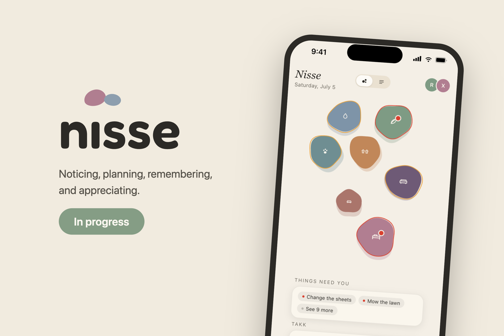
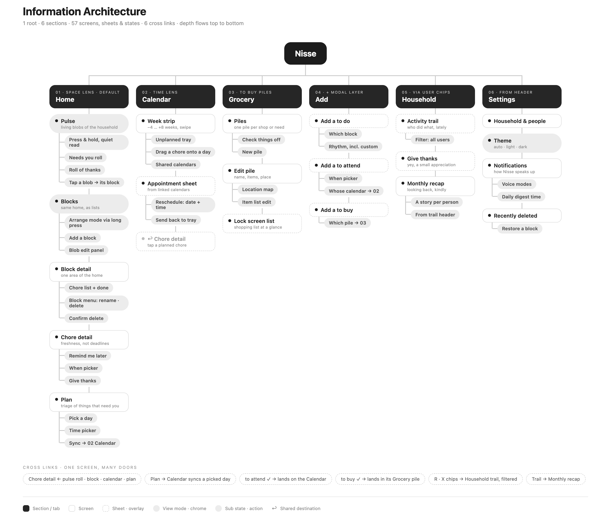
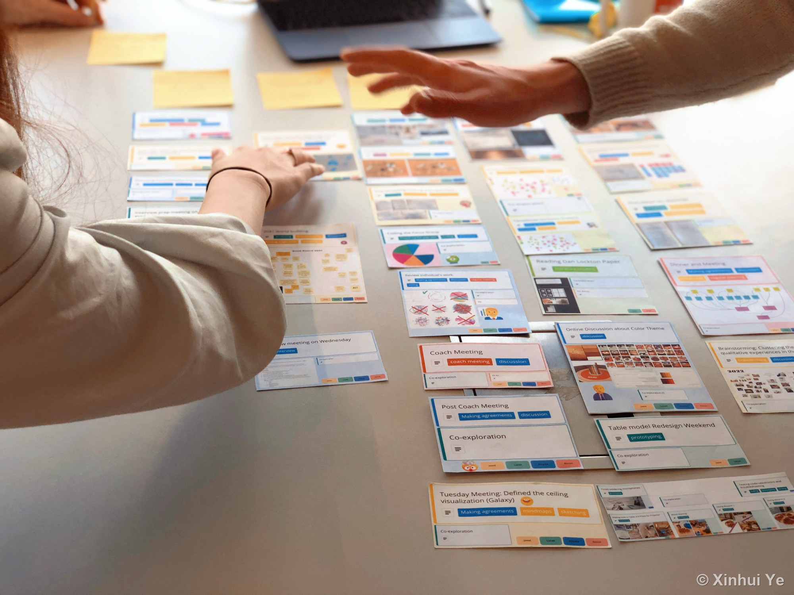
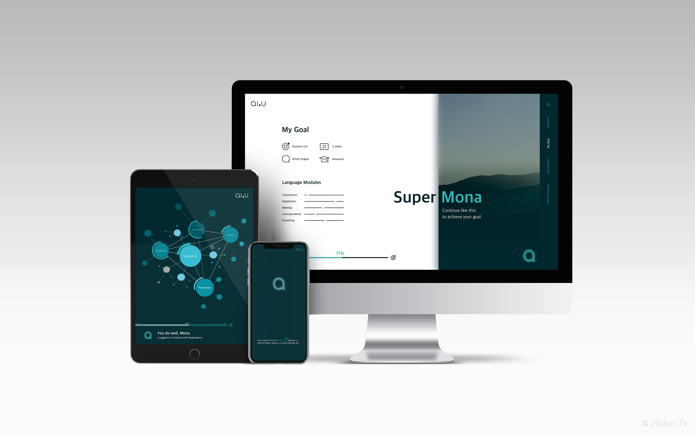
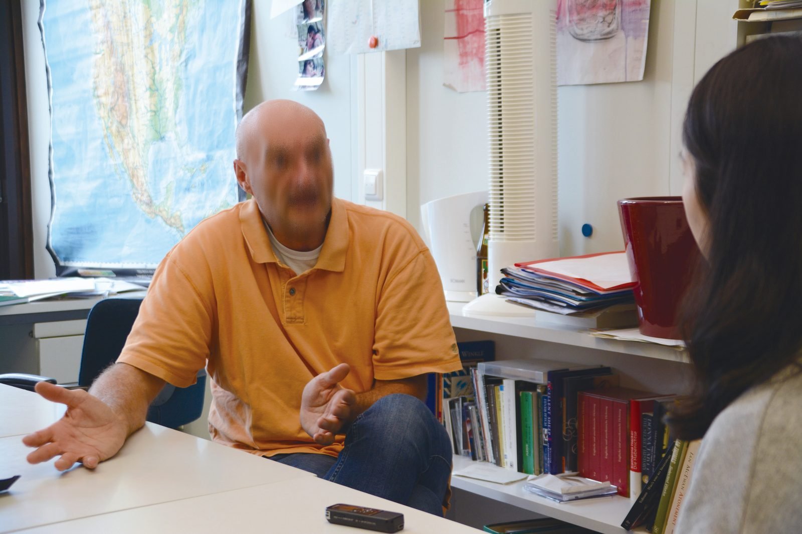
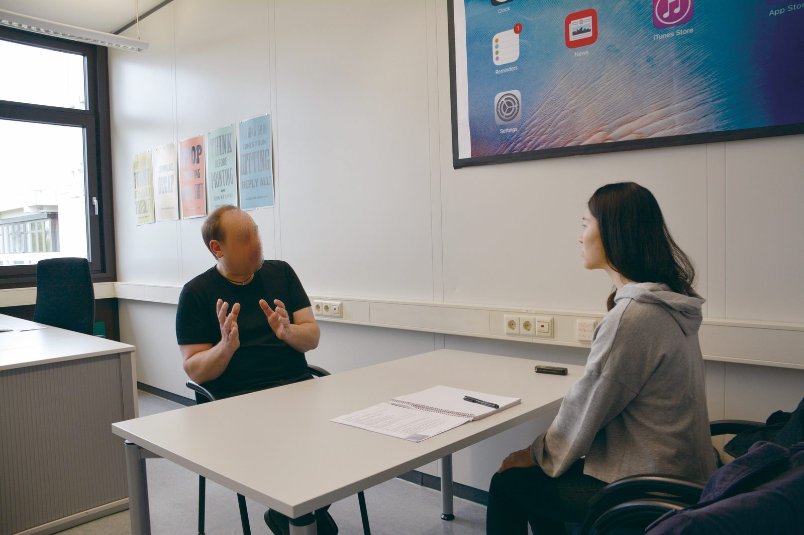
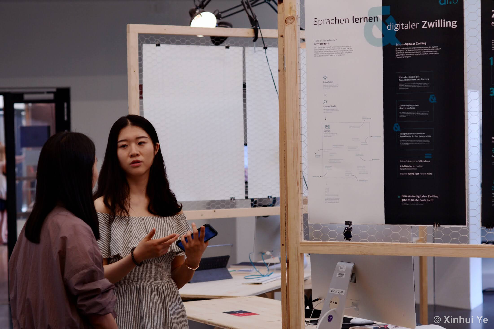

Three projects,
start to finish.
I owned each of these end to end: the question, the research, the design, and the story that won people over. Every project links to a longer read on my site if you want the detail.
Nisse, for the chores nobody sees
A home app for couples that makes invisible work visible without turning the relationship into a scoreboard. I found the idea, did the research, set the visual system, and built it together with a frontend engineer, judging every idea on a real screen. Nisse now runs as a working app on my own iPhone. The App Store is the next step.
Concept, research, UX and UI, art direction
Competitive mapping, wireframing, visual systems
Me plus a frontend engineer
Working app on iPhone, not yet in the App Store

The problem, grounded in research
Sociologist Allison Daminger interviewed 35 couples and found that cognitive household labor, the noticing, planning and remembering behind every chore, lands on one person by default. Women led it in 26 of 32 couples. I then mapped 20 existing products against two questions: who does the noticing, and when ownership gets fixed. Nearly every tool quietly hands one person the clipboard.
One structural decision
Tasks are born ownerless in a shared pool and claimed at pickup, never assigned at creation. Chores carry a rhythm, such as every two weeks or so, instead of a deadline. A monthly mirror shows how the work spread itself over the month. It starts conversations rather than handing out verdicts. Removing the assign field did more for fairness than any fairness feature could.
Four mistakes, from the audit of 20 products


From nine flows to one architecture
Every flow was wireframed before any visual polish: nine flows on one board, argued over and settled. Out of that came the information architecture, one root with six sections and 57 screens, sheets and states.

The real thing, on a real phone
These are not mockups. They are screens from the app as it runs on my iPhone today.


"Structure is ethics. The most consequential design decision in Nisse is a missing form field."
Five months inside 16 design teams
The most complex study I have designed and run: five months of mixed methods observation, following 61 designers in 16 teams through their entire design process. I owned it end to end, from objectives and instruments to fieldwork, analysis, and the storytelling that carried it into a Q1 journal.
Sole researcher, from design to publication
Diary study, weekly interviews, reflection cards, statistics
61 participants · 16 teams · 5 months
"Beyond Divergence", She Ji (Q1)

Instruments people enjoyed using
Every week each team documented their activities in a shared visual diary, with descriptions, images, assignees and emotions, then walked me through it in a group interview. For the closing session I turned their digital entries into physical cards they could sort on the table. Participants told me the weekly reflection made them better teammates, and several said it beat their regular coaching sessions.
From 1,562 activities to five patterns
The study produced 1,562 documented activities and 78 hours of audio. I built an analytical framework with four dimensions to code every activity, and five distinct patterns of exploring together emerged from it. Thriving teams explored together more often and in more varied ways than struggling ones, and the statistics confirmed the contrast.


Drag the handle to wipe between the framework and a real team mapped onto it.
How to read this map
Every activity a team documented becomes one line across four dimensions. Information distribution: was knowledge shared before the activity? Diversity of insights: where did the ideas come from? Communication types: what kind of exchange took place? People distribution: was the team in one room, partly online, or fully online?
Mapping an activity
Take a brainwriting session. Nothing was shared beforehand, the ideas came through a structured group technique, sketches were passed around and built on, and everyone sat at one table. Those four values draw one line on the map. Draw all 161 lines from all 16 teams, and five recurring patterns surface.
Five patterns, defined and put to work
From the coded data I defined five behavioral patterns of how teams explore ideas together. They are useful in two directions. They signal whether a collaboration is healthy and likely to succeed, and they show a team where to adjust while the project is still running, so things get better in the middle of the work instead of in the postmortem. I now use them the same way in my own practice: as a guide for designing tools and processes for teams.
Participants, in their own words
"It was overwhelmingly positive and I looked forward to every 'Xinhui' meeting. I am sure my group feels the same. We reflected weekly on our design process and were able to become better group members and even friends. Thank you!"
"Xinhui was always lovely throughout the entire process, I did not feel pressured or judged anytime. As a result, the entire experience was very lovely to be a part of. It also helped a lot to the team to revise who did what, how much of a progress was made every week. Thank you for everything!"
"Overall I am glad this study took place, because it has provided me with tangible evidence of the process, that has been, and will be very useful in the future."

"What the authors learned offers ideas and insights that can be applied to working designers in professional practice."
AI&U, language learning that learns you first
My graduation project: a concept for an adaptive language learning platform that builds a live model of the learner, from level and goals to focus rhythms and mood, and shapes every lesson from it. Chiara Mayer and I spent five months on it, from expert interviews to paper prototypes to concept films. Graded sehr gut, the top grade.
Research, concept, UX, screens, film
Expert interviews, paper prototyping, user testing
A duo, five months
sehr gut · public demo days

Research before designing
Before drawing a single screen we interviewed the people who knew the territory: language teachers, researchers in online learning, a digital twin engineer, and an AI researcher at DFKI. Each conversation took a wrong assumption off the table. Ideas stayed cheap at this stage. We worked in flowcharts, cut paper screens, and a throwaway click path.
Test rough, watch closely
We put the paper prototype in front of real learners and stopped talking, because watching someone hesitate says more than asking what they think. Whatever made people pause for the wrong reason got rebuilt. Short films then placed the concept in everyday moments, like a commute or a work call to prepare for, instead of a feature list.
The process, out on the table
Interviews, sticky notes, an affinity wall, mood cards, hand drawn screens, testing, and two days of public demo. This is what owning a project end to end looks like in photos.





The screens, four moments
The concept in four moments, from first open to everyday reading. Every screen is shaped by the same live model of the learner.


The concept film
"Most tools teach everyone the same way. AI&U works the other way around: it learns who you are first."